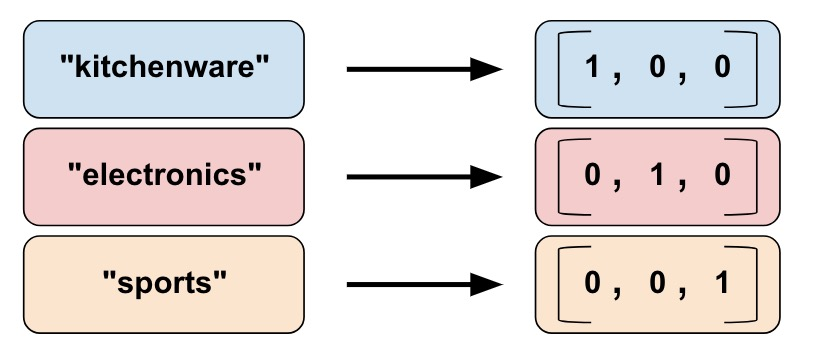

特征列tf.feature_column通常用于对结构化数据实施特征工程时候使用, 可以让你将各种不同的原始数据转化为模型可用的格式, 图像或者文本数据一般不会用到特征列.
特征列介绍

对于经过一些简单清洗的结构化数据来说, 数据的类型有各种各样的, 不过如果从计算的角度来说的话, 可以大体分成两类, 即数值(numeric)特征, 与类别(categorical)特征.

特征列的作用, 类似于连接原始数据与模型之间的一座桥梁, 原始的结构化数据在经过特征列以后, 可以以更好的形式方便地送入模型当做, 进行训练与预测.

而具体说来, tf.feature_column的API如上, 有两个类分别是Categorical-Column与Dense-Column, 各自代表了类别与类别与数值特征的相关类, 以及各自的数据处理方法. 其中的bucketized_column方法作用于数值特征, 但转换得到的结果与类别特征一致, 所以图上同时连接到两个类.
下面逐一展示各个方法的主要用法.
数值型方法
numeric_column
numeric_column是数值型方法中常用且简单的方法.
1 | data = [1, 2, 3, 4, 5] |
1 | <tf.Tensor: shape=(5, 1), dtype=float32, numpy= |
bucketized_column

如上图, 在使用bucketized_column时, 需要设置分割区间, 假设输入区间按大小顺序包含3个数值, 则可得到4个个分箱.
在得到分箱后, bucketized_column会进一步将其进行独热编码表示.
1 | data = [1, 2, 3, 4, 5] |
1 | <tf.Tensor: shape=(5, 3), dtype=float32, numpy= |
embedding_column
一般来说, 类别特征或者离散化的数值特征会做独热编码, 这样就可以直接输入模型进行训练. 不过若是对深度学习有更多了解的同学, 知道可能先进行embedding, 再参与运算会好一些. 这里tf.embedding_column就是做的这件事情.
1 | data = [1, 2, 3, 4, 5] |
1 | <tf.Tensor: shape=(5, 3), dtype=float32, numpy= |
类别型方法
categorical_column_with_vocabulary_list

如上图所示, 将类别特征转换为独热编码.
categorical_column_with_vocabulary_list与categorical_column_with_vocabulary_file方法类似, 只是前者利用列表指定需要编码的属性, 后者利用文件(将属性写入文件)来指定编码.
同时, 可能细心的同学注意到了, 前面的数值型方法中没有indicator_column方法, 这是因为即便是类别型特征, 在入模前也需要转换成数值型, 而indicator_column的作用就是这个.
1 | data = ['a', 'b', 'c', 'a', 'b'] |
1 | <tf.Tensor: shape=(5, 3), dtype=float32, numpy= |
categorical_column_with_hash_bucket

在一些时候, 类别特征中包含的属性数量过多, 一来指定编码会比较麻烦, 而来可能造成过拟合. 此时一个解决方法是利用hash映射, 将较多的属性映射到不同的较少的分箱. 带来的问题是会存在hash冲突.
1 | data = ['a', 'b', 'c', 'a', 'b'] |
1 | <tf.Tensor: shape=(5, 2), dtype=float32, numpy= |
crossed_column
对于线性模型来说, 由于表达能力较差, 有时候需要手动将特征进行交叉组合, 来提高学习效果.
1 | data_dict = {'x': [1, 2, 3, 4, 5], 'y': ['a', 'b', 'c', 'a', 'b']} |
1 | <tf.Tensor: shape=(5, 5), dtype=float32, numpy= |